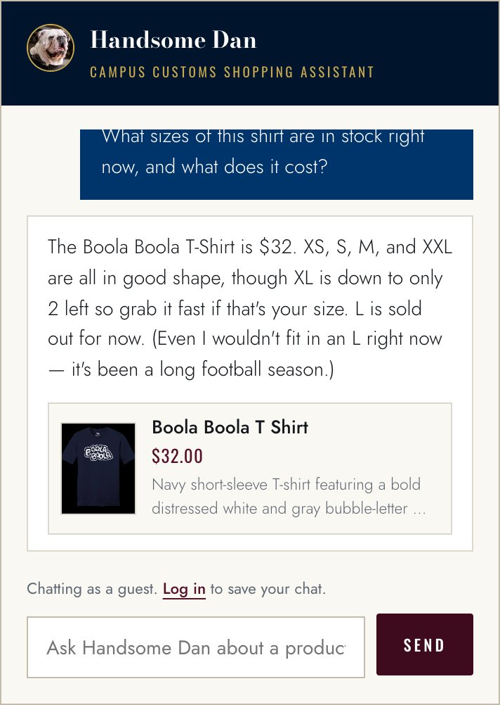
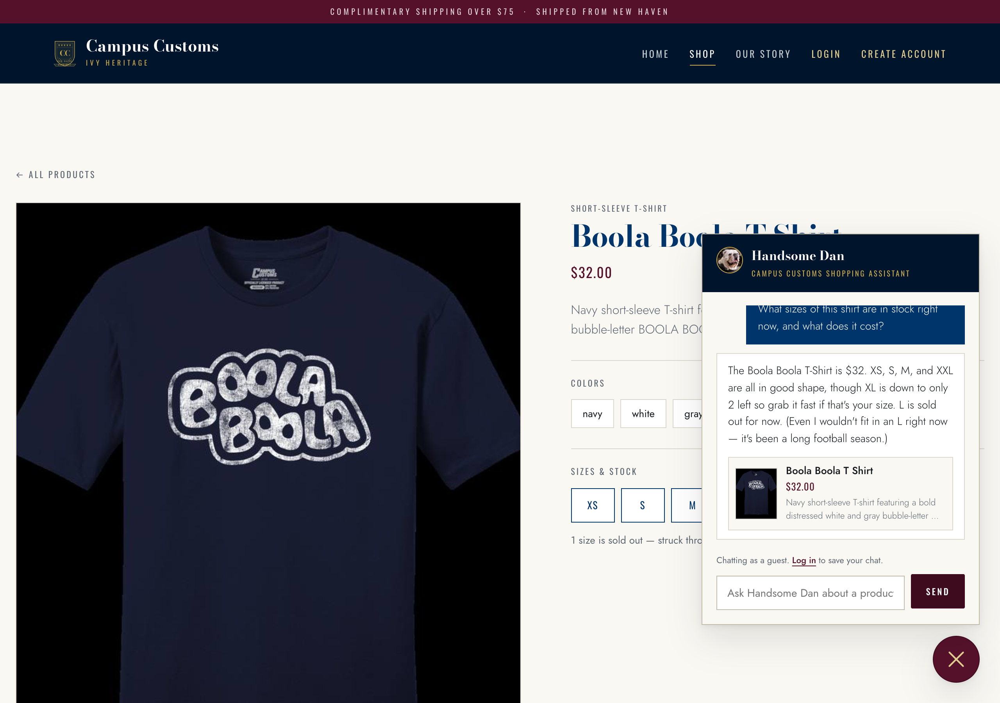
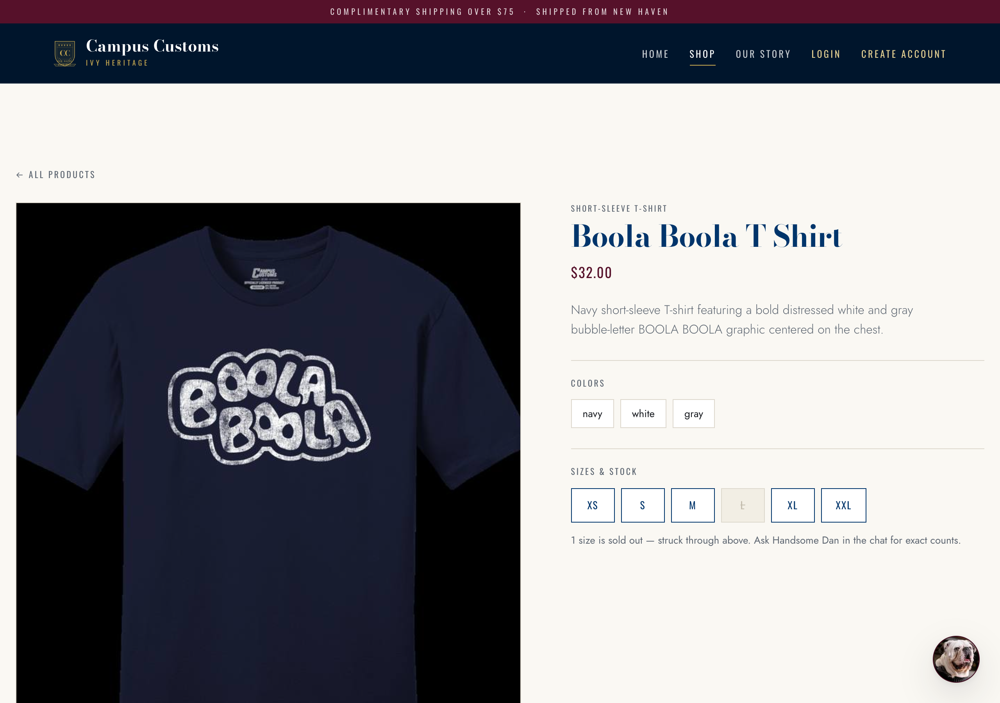
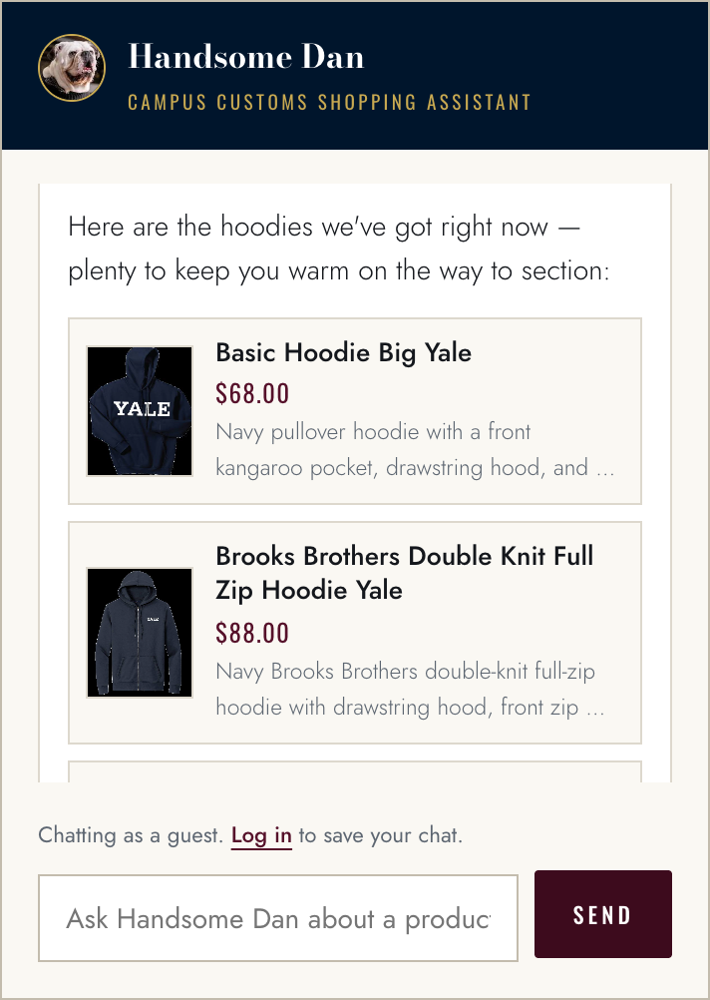
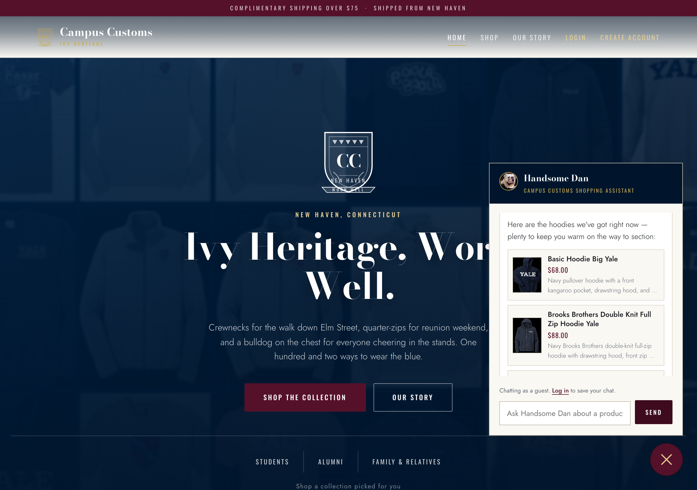
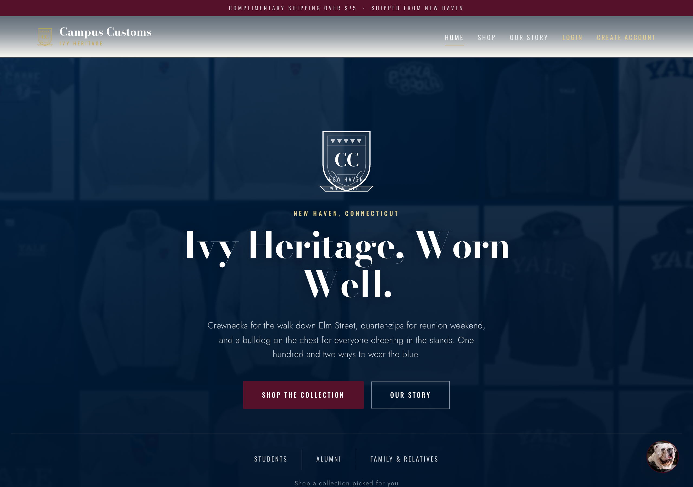
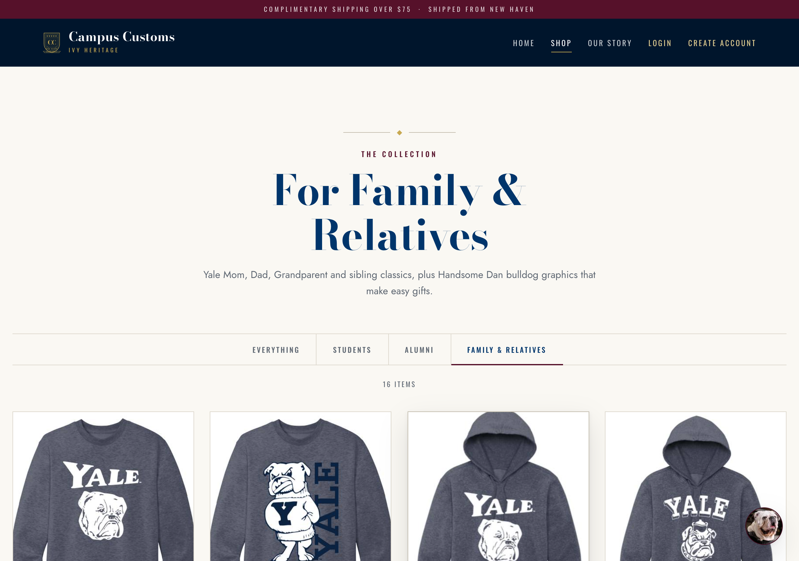

Check 1The chat reports a real inventory level
On the Boola Boola T Shirt page, the chat was asked about stock and price. The agent has no stock figures in its prompt — it has to call the inventory tool, which queries the database at the moment of the question.
“What sizes of this shirt are in stock right now, and what does it cost?”


What the database actually holds
| Size | XS | S | M | L | XL | XXL |
|---|---|---|---|---|---|---|
| Quantity | 12 | 12 | 15 | 0 | 2 | 20 |
From SELECT size, quantity FROM inventory WHERE product_id =
'boola-boola-t-shirt'; price 32.0 from catalogue.
And the page tells the same story

The answer matches the database row for row: $32, XL flagged as “down to only 2 left,” and L reported sold out. The agent volunteered the two unflattering facts rather than claiming everything was available, which is the honesty behaviour the stock tool was built to enforce.
Check 2A category question returns dynamic product cards
Asked from the home page, with no product in context, so the agent has to run a catalogue search and hand the results to the front end as structured data.
“Do you have any hoodies?”


Spot-check against the catalogue
| Card | Price shown | Price in DB |
|---|---|---|
| Basic Hoodie Big Yale | $68.00 | 68.0 |
| Brooks Brothers Double Knit Full Zip Hoodie Yale | $88.00 | 88.0 |
| Champion Reverse Weave Hoodie 1 | $68.00 | 68.0 |
| Crew Left Chest Hoodie | $68.00 | 68.0 |
The cards are generated at request time from search results, not written into the reply text — the agent returns product IDs and the widget renders the image, name and price from the catalogue, so every price on a card is correct by construction. The prose stays to a single sentence because the cards carry the detail.
Check 3Usability feature — audience segments
Problem 9 added three audience entry points — Students, Alumni and Family & Relatives — so a visitor who doesn’t know what a “quarter-zip” is can still start from who they are. The pills sit under the home hero; each one opens a pre-filtered collection.


/products?segment=family.
The click lands on a genuinely narrowed page, not the full catalogue with a label on it: the heading changes to “For Family & Relatives,” a sentence explains what was selected and why, the segment is marked active in the filter bar, and the count reads 16 items out of 102 — matching the 16 rows the API returns for that segment. The crowd of 102 products becomes a browsable handful in one click.